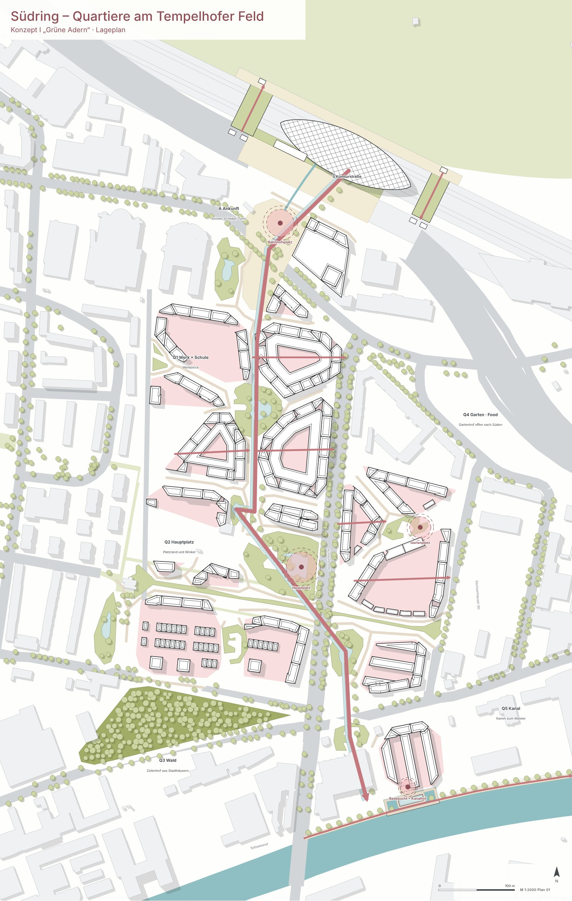
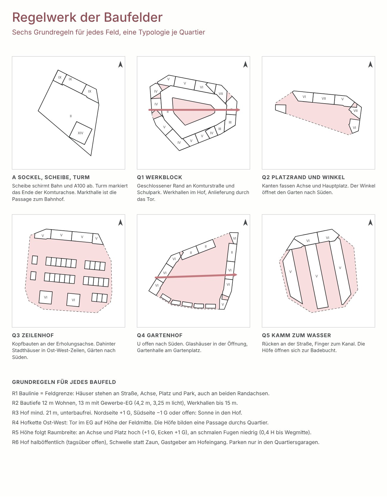
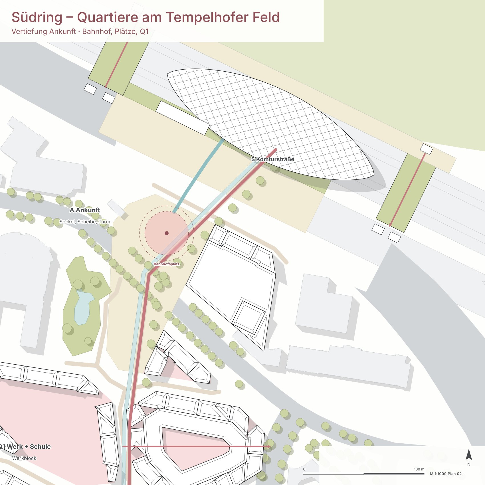
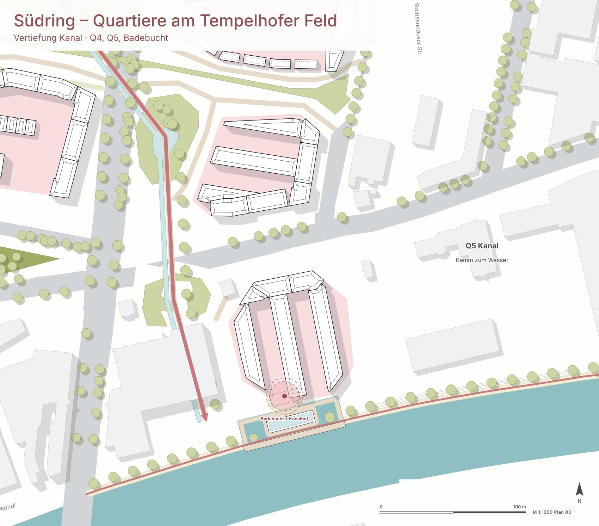

Jedes Baufeld folgt sechs Grundregeln. Jedes Quartier hat eine eigene, im Schwarzplan ablesbare Typologie, passend zu seiner Freiraumqualität. Die Häuser stehen auf der Feldgrenze, auch an beiden Randachsen. Die Höfe bilden eine Ost-West-Kette.

| Quartier | Typologie | Freiraumqualität | Erschließung | Schließt | Öffnet | GFZ · WE |
|---|---|---|---|---|---|---|
| A Ankunft | Sockel, Scheibe, Turm: Markthalle 2 G, Scheibe 9 G, Turm 14 G | Bahnhofsplatz, hart, mit Bäumen und Regenkaskade | vom Bahnhofsplatz und der Germaniastraße; Anlieferung Halle von der Rampe Ost | Scheibe gegen Bahn und A100 (Lärm) | Halle als Passage zum Bahnhof, Turm zur Komturachse | 4,6 · 210 |
| Q1 Werk + Schule | Werkblock: Rand 6–7 G, Werkhallen 2 G im Hof; Schule als L 4 G, Sporthalle, Kita | Werkhof befestigt mit Rigolen, Dachgärten auf den Hallen, Schulpark | Anlieferung durch die Tore; Wohnungen von der Straße | Komturstraße, Schulpark | Werkhof über die Ost-West-Tore | 2,1 · 534 |
| Q2 Hauptplatz | Platzrand und Winkel: Kanten 6–7 G, Winkel in schmalen Feldern | Hauptplatz mit Retention, Gemeinschaftsgärten | Eingänge vom Platz, Café an den Ecken | Kante zum Platz und zur Westachse | Gärten nach Süden | 3,2 · 241 |
| Q3 Wald | Zeilenhof: Kopfbauten 5 G, Stadthäuser 3 G (6,5 × 10,5 m, Gruppen à 6), Punkthäuser 6 G am Waldrand | private Gärten, Wiesenhof, Waldrand | Nord-Süd-Wohnwege zwischen den Gruppen, autofrei | Nordkante zur Erholungsachse | nach Süden zum Wald | 1,45 · 255 |
| Q4 Garten · Food | Gartenhof: U 5–6 G offen nach Süden, Glashäuser in der Öffnung, Gartenhalle am Gartenplatz | produktive Gärten, Gewächshäuser, Gastro | Tor Ost-West durch den Hof, Gastro am Gartenplatz | Komturstraße, Sachsenhauser Str. | Süden: Sonne für die Beete | 1,75 · 302 |
| Q5 Kanal | Kamm: Rücken 6 G an der Straße, Finger 5 G zum Wasser | Ufer, Badebucht, Uferpark | Eingänge vom Rücken, Höfe zum Ufer offen | Straße im Norden | Süden zum Kanal | 2,6 · 294 |


Die Bilder zeigen das weiße Arbeitsmodell mit Skizzenlinien. Bild laden, Prompt kopieren, Stil anpassen. Geometrie und Kamera bleiben gleich.
Euer Drive: „Südring: Konzepte für Hannover“ (Hof-Regelwerk „Der doppelte Hof“), „Südring: Literaturzusammenfassung“ (Bürklin/Peterek, Basics Stadtbausteine, S. 20–36). Kanal: Teltowkanal, Teltowkanalweg, SenUVK 2026 zum Baden, GDWS Genehmigungen, Copenhagen Harbour Baths, Badeschiff Berlin. Typologien: Ecovillage Hannover, Oberbillwerder, Hunziker Areal, Kalkbreite, BIGH Brüssel, Möckernkiez.
Dateien im Chat: Pläne maßstäblich als PDF (1:2000, 1:1000, Regelwerk), DXF für Vectorworks (Nullpunkt 391250 / 5813550), 3D als FBX/OBJ + .blend.